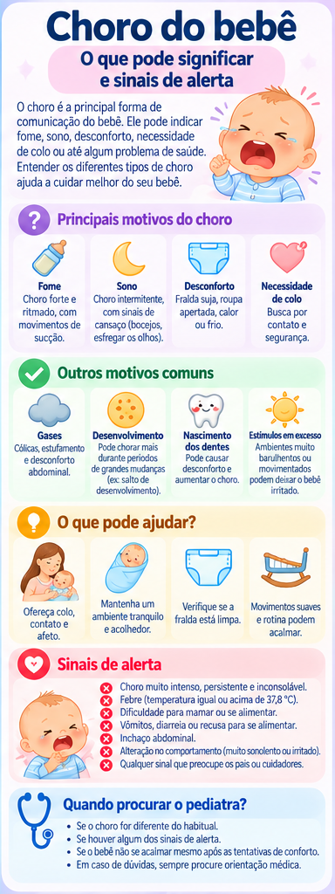

Choro do bebê: o que pode significar e sinais de alerta
Chorar é uma das principais formas de comunicação do bebê. O contexto importa: fome, sono, desconforto e necessidade de proximidade podem provocar choro, mas mudanças importantes no estado geral merecem atenção.
Primeiro, observe o bebê como um todo
Antes de tentar encontrar uma única causa, observe alimentação, sono, temperatura, respiração, fralda, conforto, comportamento e se o bebê consegue se acalmar. Bebês pequenos também podem demonstrar dor com irritabilidade, mudanças no sono ou na alimentação e choro diferente do habitual.
O que pode ajudar
- Verifique fome, fralda e conforto térmico.
- Ofereça colo e ambiente calmo.
- Observe se o bebê está mamando e interagindo como de costume.
- Se o choro persistir ou parecer diferente, procure orientação.
Evite oferecer medicamentos ou receitas caseiras sem orientação profissional.
Sinais de alerta
Procure avaliação médica quando o choro vier acompanhado de sinais como dificuldade para respirar, febre, vômitos repetidos, manchas na pele, recusa alimentar, sonolência ou redução importante da atividade, ou quando houver dor aparentemente intensa ou piorando.
Choro inconsolável por várias horas também é um motivo citado pela SBP para procurar atendimento.
Uma regra importante para quem cuida
Se o choro estiver deixando o cuidador muito estressado, coloque o bebê em local seguro e peça ajuda a outro adulto. Nunca sacuda o bebê.
Dúvidas frequentes
Todo choro significa dor?
Não. O choro tem muitas causas. Por isso, o estado geral e os outros sinais são fundamentais.
Quando a mudança no choro importa?
Quando é persistente, inconsolável, claramente diferente do habitual ou acompanhado de alteração da alimentação, sono, respiração ou comportamento.
Infográfico

Fontes e revisão
- Sociedade Brasileira de Pediatria. “Dor na infância: como reconhecer e quais sinais de alerta?”, setembro de 2025.
- Ministério da Saúde. Saúde da Criança — acompanhamento da saúde na primeira infância.
Última revisão: 25 de setembro de 2026.